Prepared for Brajesh, Oct 8, 2026 ET. Market data: TSLA and UBTech at Oct 7 close; Unitree intraday Oct 8 Beijing time.
Key: [V] = verified by a filing, regulator, customer press release, or independent tracker. [C] = company claim only. [R] = press report or rumor, not confirmed by the company. Not investment advice.
Where we are: - Volumes are real but small, and almost all Chinese. H1 2026 global humanoid shipments were about 19,100 (Smart Analytics Global), 22,000+ (Counterpoint), or about 25,000 (IDC), up roughly 3–5x YoY. IDC says Chinese vendors built more than 95% of them, and Chinese buyers took about 78%. The H1 revenue pool was only about $740M, with an average selling price around $29,600 (IDC, via Yahoo Finance). Full-year 2026 forecasts are about 50,000+ units (Counterpoint and Morgan Stanley China). - Most units are not doing productive work yet. IDC says 69% of H1 2026 shipments went to research/education, performances/displays, and government "data-collection centers" (state-funded robot training schools). That is down from 83.8% in 2025, which is progress, but much of China's "demand" is government-funded. - US leaders are mostly pre-revenue. Figure, Apptronik, 1X, and Boston Dynamics are in pilots or early production. Tesla is building hundreds of Optimus units a week, but by its own admission they weren't doing useful work as of early 2026, and a significant share need rework (The Information). - Two policy shocks in 2026: 1. FCC Covered List (Jul 28, 2026): All foreign-produced "advanced robotic devices," including humanoids and quadrupeds, can't get new FCC authorizations, so new models can't be imported or sold in the US without a Department of War Conditional Approval. The rule is country-neutral. To count as domestic, a robot must be made in the US with more than 65% US component cost (75% from 2029). Models authorized before Jul 28 remain legal. This favors US-built robots (Tesla, Figure, Agility, 1X, Apptronik) and blocks new Unitree, UBTech, and Rainbow models in the US. It may also hurt US makers that rely on Chinese actuators. 2. China tightens humanoid IPOs (Sep 2026): After Unitree's wild debut, regulators used informal "window guidance" to slow listings. They want real commercial orders, narrowing losses, and core technology, and are wary of revenue from government data centers and related parties (Reuters Sep 21; CNBC Sep 29). - Valuations: Private: Figure $39B, Skild AI $14B+, Physical Intelligence ~$11B, Neura ~$7B, 1X ~$6B (down from $10B sought). Public: Unitree trades around 80x+ trailing sales (my estimate), and has fallen from a ¥1,100 debut open to about ¥431. - Long-term forecasts: IDC sees 750,000+ units in 2030. Morgan Stanley sees 446,000 China units / $15B in 2030 and calls it a $5T market by 2050. Goldman sees a $38B TAM by 2035.
"ChatGPT moment" signals to watch (in rough order of importance): 1. Unscripted generalization. A robot handles new multi-step tasks in a home or factory it has never seen, with no teleoperation, at 95–99%+ success, demonstrated by third parties rather than edited company videos. Watch GR00T N2 (due by year-end 2026), Physical Intelligence's π models, Figure Helix 02, and Gemini Robotics. 2. Paid fleets with disclosed reliability. Repeat orders of 1,000+ units that are actually delivered and running, with published uptime, MTBF (mean time between failures), and throughput vs a human. UBTech admits Walker S2 is at about 50% of human efficiency, targeting 80% by 2027. 3. Economics. Hardware under about $20–30k, or a lease under a human wage (below ~$10/hr all-in). Agility's $300M / 1,000-robot / 3-year contract implies roughly $100k per robot per year, so it isn't there yet. 4. Consumer deliveries at scale with retention. 1X NEO ($20k or $499/mo), Figure home, Sunday Memo. 5. Tesla leasing or selling Optimus externally. Planned for select warehouse lessees, with sales "late 2027." 6. Shipment mix. Research, display, and government data centers falling below 50% of shipments (IDC). 7. Capital markets. AGLT (Agility) trading, AgiBot's HK IPO, and Figure or Boston Dynamics filing.
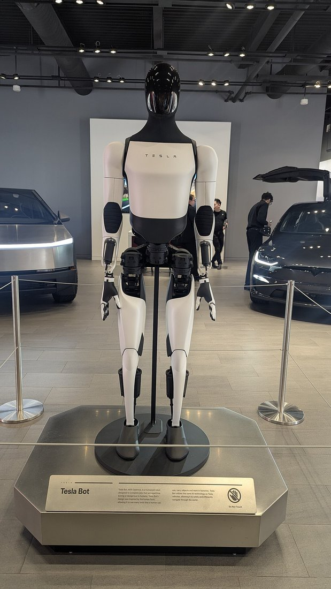
Tesla Optimus at a Tesla showroom (Nov 2025). Photo: Sikander / Wikimedia Commons, CC BY-SA 4.0
Tesla (Optimus): USA, TSLA (Nasdaq), $377.81, about $1.49T market cap (Oct 7). Optimus V3 production began at Fremont in the former Model S/X space. Output went from a few dozen units/week in Q2 to several hundred/week by August, targeting more than 1,000/week by year-end [R: The Information, Sep 25]. A "significant portion" needs immediate rework, and robots still take days to learn basic tasks. Tesla's Q1 2026 update says the Fremont line is designed for 1M/year and a Giga Texas line for 10M/year long term, with a footnote that capacity is not output [V: TSLA IR]. Musk admitted in early 2026 that zero Optimus units were doing useful work, after promising about 10,000 built in 2025. Plans: lease early V3s to select warehouse customers, with commercial sales not before late 2027 [R]. Musk's pay package includes a 1M-Optimus milestone. Next catalyst: Q3 earnings Oct 21, 2026 after close. Optimus is a call option inside an EV/energy/AI stock; it is not a pure play.
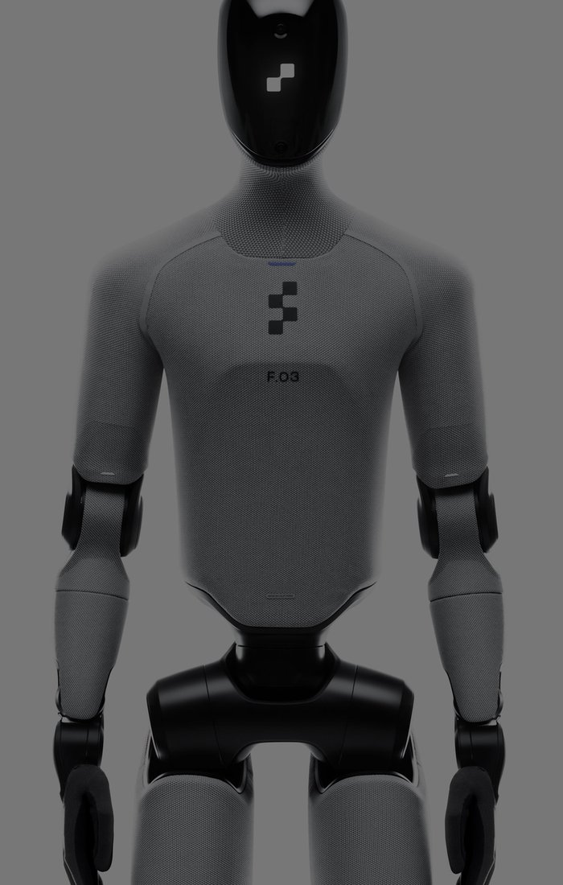
Figure 03. Image: Figure AI
Figure AI: USA (San Jose), private. Last priced round: $39B post-money Series C (Sep 2025, $1B+), led by Parkway, with NVIDIA, Brookfield, Microsoft, Intel Capital, OpenAI Startup Fund, Bezos Expeditions, and others [V]. Talks were reported at $39.5B (May 2026) [R]. Its BotQ plant had built 350+ Figure 03 units at about one per hour by late April 2026 [C]. Figure 02 ran an 11-month BMW Spartanburg pilot (90,000+ parts loaded, 1,250+ runtime hours) [C, corroborated by BMW]. Figure 03 started a BMW logistics-sequencing project on Jun 25, 2026, but BMW disclosed no unit count, so figures like "40 units" are unverified. BMW describes it as continuing development [V: BMW press release]. Figure has a second named customer, Catalyst Brands (JCPenney's parent), in Reno (May 26, 2026). No consumer price yet; the CEO has floated a $400–600/month home lease [C]. Risks: a very rich valuation with undisclosed revenue, and a CEO known for hype. Not investable for retail; NVDA and MSFT give tiny indirect exposure.
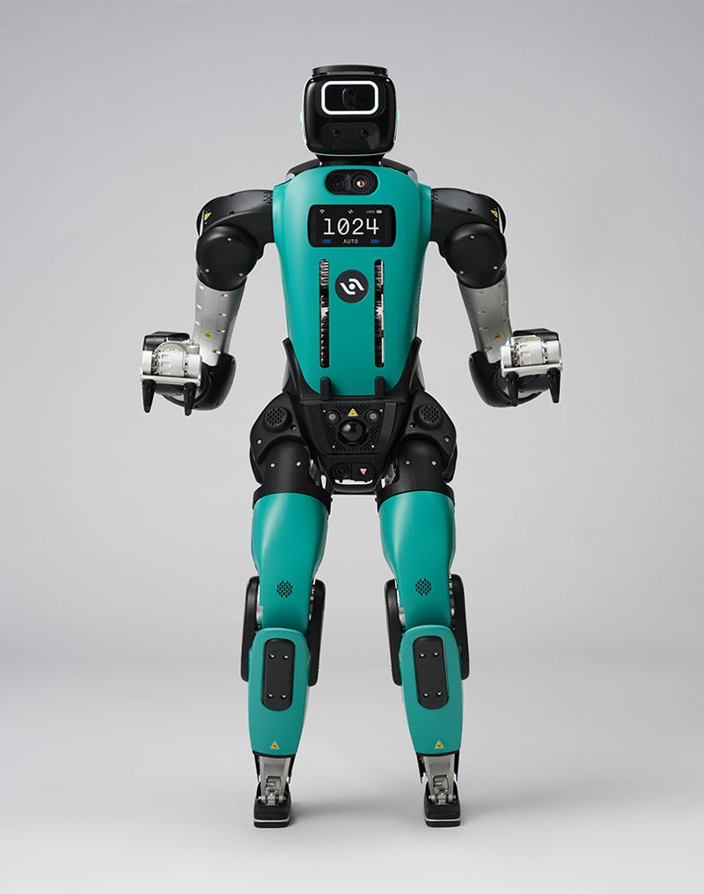
Agility Digit. Image: Agility Robotics
Agility Robotics (Digit): USA (Salem, OR). Going public via SPAC: Churchill Capital Corp XI (CCXI, Nasdaq) → expected ticker "AGLT." The deal values Agility at $2.5B pre-money and brings in more than $620M (about $420M trust plus a ~$200M Foxconn-led PIPE) [V: SEC 8-K/S-4]. The preliminary S-4 was filed Sep 4, 2026; no vote date yet, with closing expected by end-2026. Digit is commercially deployed: GXO (multi-year RaaS, robots-as-a-service), Schaeffler, Toyota Motor Manufacturing Canada, and Mercado Libre, with 65,000+ operating hours across nine facilities [C, in SEC filing]. Amazon has run multiple pilots. 2025 opex was about $111M and cash burn about $100M, with revenue undisclosed. The "$300M committed orders" for Digit v5 is one undisclosed customer's 1,000-robot, three-year, milestone-contingent contract [V: filing fine print]. It is the first US pure-play humanoid stock, built in the US (a plus under the FCC rule). Risks: SPAC redemptions and dilution, customer concentration, and wheeled or arm-based competitors.
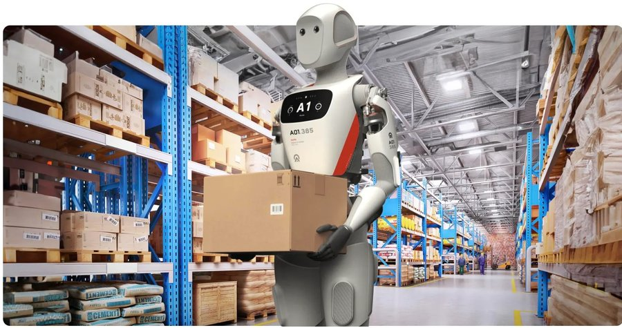
Apptronik Apollo. Image: Apptronik
Apptronik (Apollo): USA (Austin), private. It raised $520M in Feb 2026, taking its Series A past $935M, at about $5B (CNBC) to $5.5B+ (Bloomberg), backed by Google, Mercedes-Benz, B Capital, and others [V]. Jabil manufactures Apollo and pilots it in Jabil plants. Mercedes and GXO pilots were announced earlier. Maturity: pilots. No published unit volumes or price. Commercial quantities of a next-gen Apollo are reported for 2027 [R]. A deep Google DeepMind relationship (Gemini Robotics) is a plus. Indirect exposure via GOOGL or JBL, both tiny.
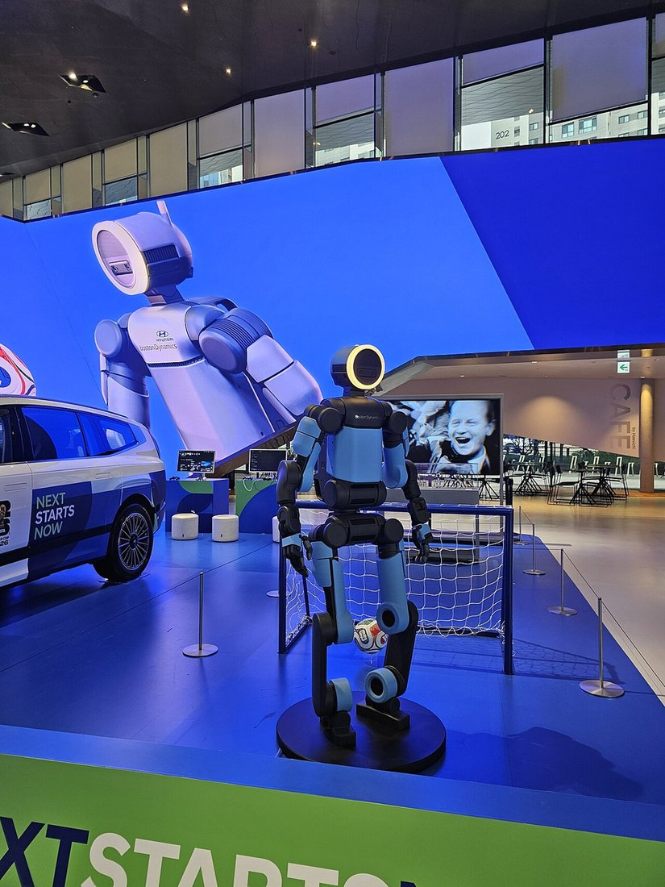
Electric Atlas at Hyundai Motorstudio Goyang. Photo: Damian B Oh / Wikimedia Commons, CC BY-SA 4.0
Boston Dynamics (Atlas): USA (Waltham, MA), private, majority-owned by Hyundai Motor Group. The production electric Atlas was unveiled at CES (Jan 2026) and is being built in Boston. All 2026 units are committed to Hyundai's Robotics Metaplant Application Center (Georgia) and Google DeepMind, with other customers in early 2027 [C]. Units built aren't disclosed. Hyundai plans robot production capacity of 30,000/yr by 2028, Atlas parts-sequencing at the Georgia Metaplant from 2028, and assembly by 2030 [C]. A Hyundai executive told Reuters (Sep 14, 2026) an IPO is unlikely in 2027, since Atlas isn't deployed at scale and the company is unprofitable. Exposure: Hyundai Motor (005380.KS), where Boston Dynamics is a small slice.
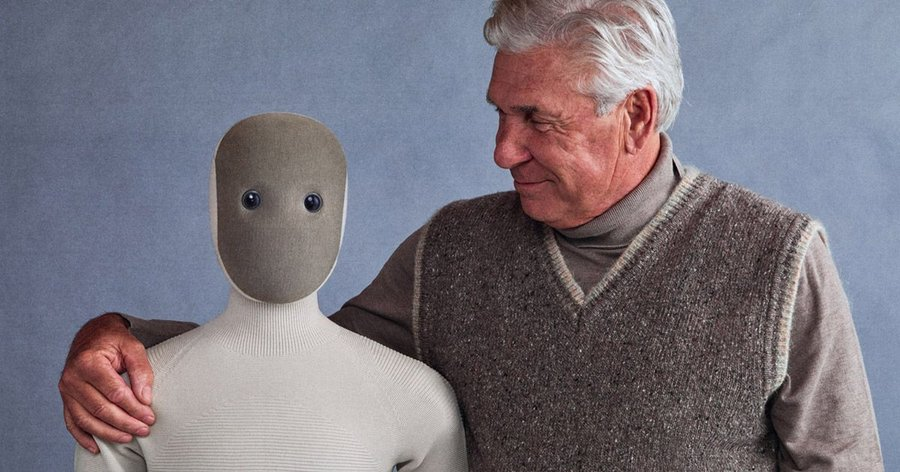
1X NEO. Image: 1X Technologies
1X Technologies (NEO): Norway-founded, now Palo Alto, CA; private. NEO is a soft-bodied home humanoid at $20,000 or $499/month [V: 1X site]. 1X claims 10,000+ preorders and says first-year capacity sold out in five days [C]. It opened a US factory in Hayward, CA on Apr 30, 2026, targeting 10,000/yr initially [C]. As of late Sep 2026, no customer deliveries were publicly confirmed. 1X's site still says "2026," while reports point to Q1 2027 [R]. At launch, 1X said remote operators could step in for tasks NEO can't do alone, a privacy and autonomy caveat. SoftBank is in talks to buy a majority stake at about $6B, below the $10B+ sought in 2025 [R: The Information, Sep 2026]. US manufacturing helps under the FCC rule. Not investable directly (SoftBank Group, 9984.T, if the deal closes).
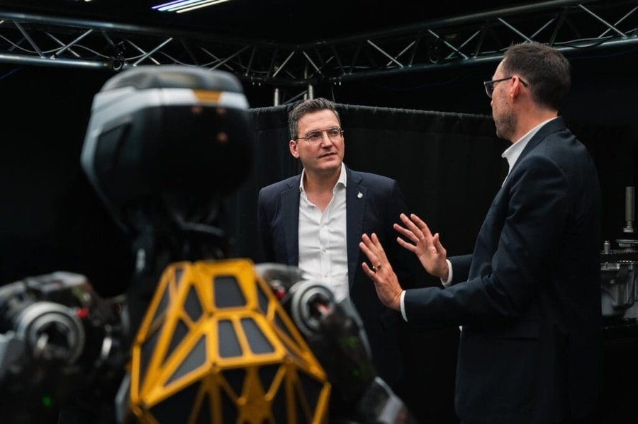
Sanctuary Phoenix (left foreground) in Sanctuary's lab. Photo: Sanctuary AI
Sanctuary AI (Phoenix): Canada (Vancouver), private. It raised more than C$140M historically. The board pushed out founder-CEO Geordie Rose (The Logic), and Daniel Friedmann became CEO in June 2026. Sanctuary has pivoted toward selling its "physical AI" software for existing industrial robot arms, citing 99.5% success on an auto wire-plugging proof of concept [C]. The Phoenix humanoid remains pre-commercial with negligible units. Treat it as a fallen early leader; a down round or sale is plausible.
Persona AI: USA (Houston), private. It builds humanoids for shipyard welding and fabrication. After a $27M pre-seed (2025), a 2026 Form D shows $65.4M sold of a planned $142M [V: SEC Form D]. An HD Hyundai deal targets welding prototypes by end-2026, with field tests and commercial deployment in 2027 [C]. Prototype stage.
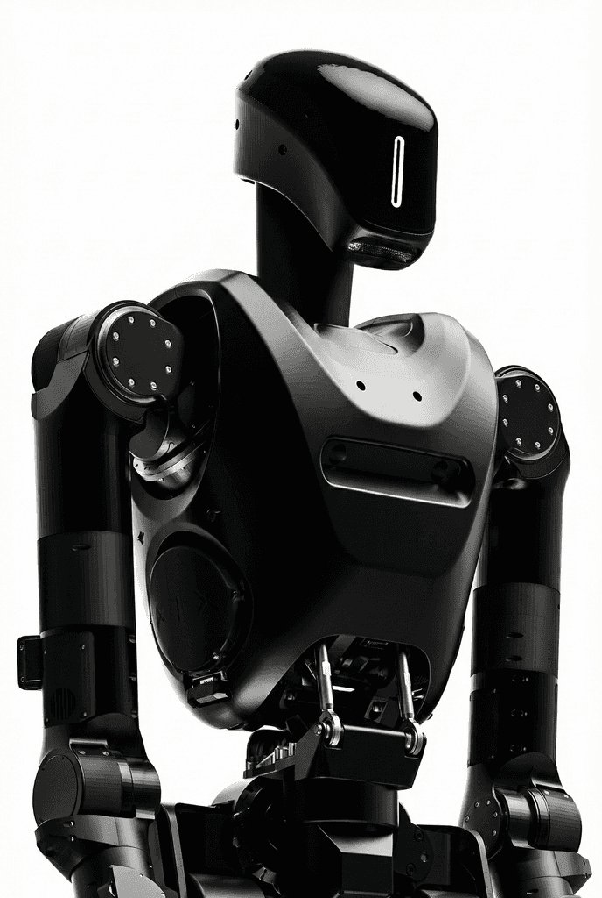
Foundation Phantom. Image: Foundation
Foundation Future Industries (Phantom): USA (San Francisco), private. It pitches humanoids for industrial and military use and has tested unarmed logistics and recon units in Ukraine [R: Business Insider, Apr 2026]. Its claimed ~$24M in US military contracts is not verified; independent reviews find far smaller inherited awards. High-hype, low-verification. Avoid as a signal.
K-Scale Labs: USA (Palo Alto). Shut down (late 2025). It failed to raise a Series A, cancelled and refunded K-Bot preorders, and open-sourced its IP. A useful reminder that most humanoid startups will fail.
Other US names worth knowing: Sunday Robotics (wheeled home robot "Memo," raised $165M in Mar 2026, household beta targeted late 2026). Generalist AI (robot foundation models, ~$3B valuation in 2026 [R]). Dyna Robotics ($120M Series A).
Physical Intelligence (π): USA (San Francisco), private. It builds general robot "brains" (π0/π0.5-class vision-language-action models) that work across many robot bodies. Filings and reports indicate a ~$1.05B Series C in May 2026 at ~$11B (Founders Fund, Lightspeed, Thrive, Lux) [R/filings; not formally announced]. It has no hardware and no meaningful revenue disclosed. If a "GPT moment" comes from software, this is the likely place.
Skild AI: USA (Pittsburgh), private. It raised $1.4B Series C led by SoftBank at $14B+ (Jan 14, 2026) [V: company and Bloomberg]. It makes the "Skild Brain," a general-purpose robot model for many body types. Revenue is undisclosed. Not investable for retail.
NVIDIA (Isaac GR00T, Jetson Thor, Cosmos, Halos): USA, NVDA (Nasdaq). NVIDIA sells the stack nearly every non-Chinese humanoid maker uses: GR00T open foundation models, with N2 previewed Mar 2026 and due by year-end, Jetson Thor onboard computers, Isaac/Omniverse simulation, Cosmos world models, and Halos safety, which Agility adopted first. Partners include 1X, AgiBot, Agility, Boston Dynamics, Figure, Hexagon, Humanoid, Mentee, and NEURA. It also invests directly in Figure, NEURA, and others. Robotics revenue isn't broken out: the automotive and robotics segment was about $2.3B of $215.9B FY2026 revenue. The cleanest liquid "picks-and-shovels" play, though humanoids barely move the stock today.
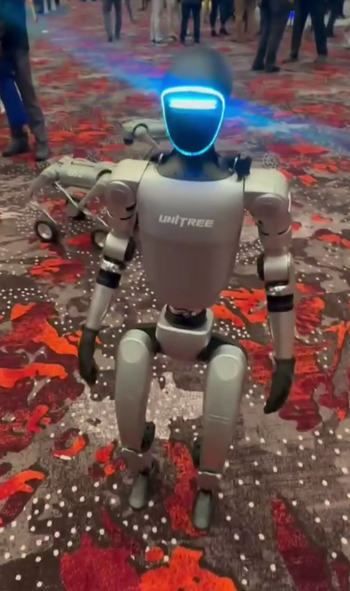
Unitree G1 at UAV Expo 2024. Photo: Sayanesy / Wikimedia Commons, CC0
Unitree Robotics (宇树): China (Hangzhou). 688836.SH (Shanghai STAR), listed Aug 19, 2026. IPO at ¥150.80, raising ¥6.1B. It opened at ¥1,100 and traded around ¥431.5 on Oct 8, a market cap of roughly ¥175B (~$26B) [V]. 2025 revenue was ¥1.70B (+335%), net profit ¥278M, and gross margin above 60%. Humanoid sales recognized: 5,215 units in 2025 (5,511 shipped, 5,716 produced), up from 412 in 2024 [V: prospectus]. H1 2026 revenue was ¥1.15B (+49%), but adjusted profit fell 19% as prices dropped and spending rose. It's the clear #2 by volume (5,000–7,000 in H1 2026 depending on tracker). It also sells about 23,000 quadrupeds a year. Products are cheap research and entertainment humanoids (G1, R1, H2); launch list prices were about ¥99k for G1 and about ¥39.9k for R1. It is profitable, which is rare, but trades at about 80x+ trailing sales (my estimate). New models are blocked from US sale by the FCC rule. US retail generally can't buy STAR shares directly; exposure comes via KOID (about 1.8% weight) and reportedly HUMN.
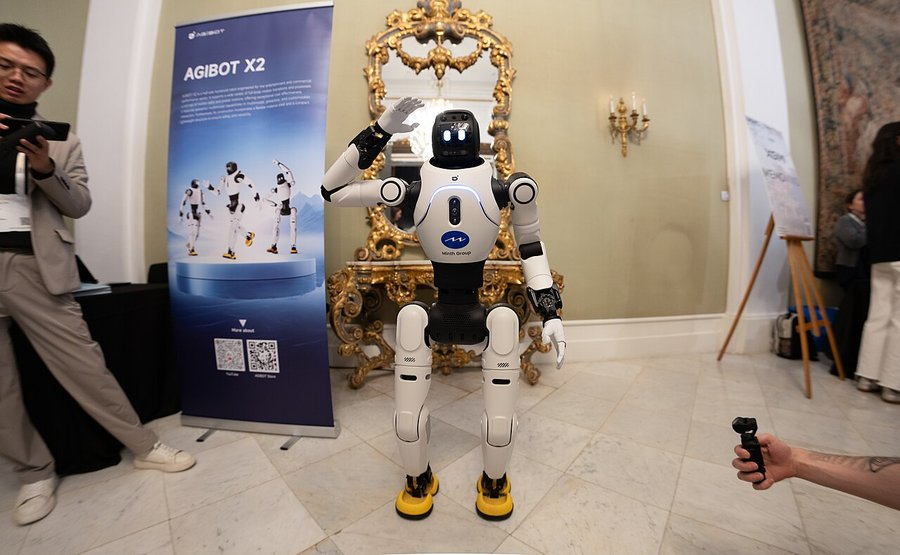
AgiBot X2 at MWC 2026. Photo: JJxFile / Wikimedia Commons, CC BY 4.0
AgiBot / Zhiyuan (智元): China (Shanghai), private (HK IPO in preparation). It is the #1 shipper globally: H1 2026 at about 8,400 (Smart Analytics Global), 8,600 (IDC), or 9,700 (Counterpoint) [V: trackers]. It reached 20,000 cumulative robots produced by Sep 24, 2026 [C]. 2025 revenue was about ¥1.05B, with about ¥280M cumulative losses for 2023–25. It targets ¥10B revenue in 2027 and profit in 2028 [C]. It hired CITIC Securities, CICC, and Morgan Stanley as HK IPO sponsors (Jul 2026), at a reported HK$40–50B target valuation (one report says ¥156B) [R]. No A1 prospectus has been filed, and the China IPO slowdown could delay it. Products: A2 (full-size, A2 Lite about $44.6k), X2/Lingxi (small), and G2 (wheeled industrial). The co-founder is the influencer-engineer "Zhihuijun" (Peng Zhihui). AgiBot controls 63.6% of Swancor Advanced Materials (688585.SH), but has said Swancor is not a backdoor-listing vehicle for 36 months. Swancor has no robot revenue and a big H1 loss. Much of AgiBot's volume goes to data-collection centers and research.
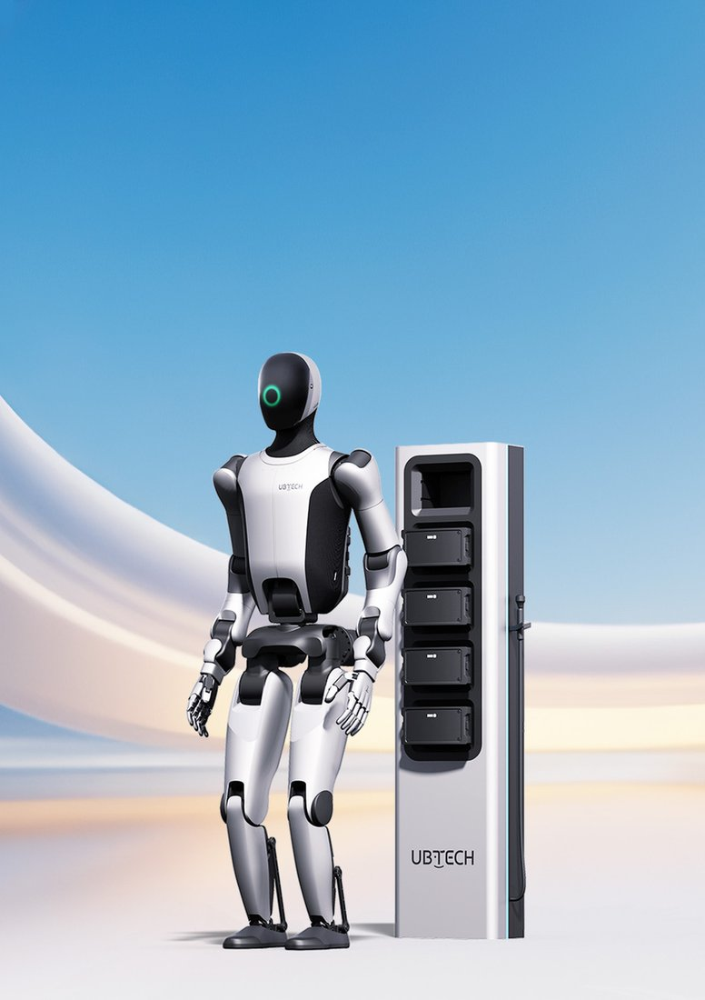
UBTech Walker S2 with its battery-swap station. Image: UBTech
UBTech Robotics (优必选): China (Shenzhen). 9880.HK, HK$74.40 (Oct 7). FY2025 revenue was ¥2.0B (+53%), including 1,079 full-size humanoids for ¥820.6M, more than 80% industrial [V: annual results]. H1 2026 revenue was ¥1.27B (+104%), with 921 full-size units (a mix of Walker and Cruzr models, not all bipedal Walker S2s) and a ¥339M loss [V: interim results]. Claimed customers and trials include BYD, Geely, Foxconn, Audi-FAW, SF Express, Texas Instruments, and Airbus (evaluation). Its 2026 target is about 5,000 humanoids [C]. A 10,000-unit/yr Liuzhou plant was commissioned Sep 12, 2026 (rated capacity, not output). Management admits Walker S2 runs at about 50% of human efficiency and costs about $80k, with a target below $20k. It launched the U1 consumer companion line (from ¥119,800, 13,361 orders claimed). Still loss-making, with frequent share placements (dilution). New models are blocked from the US by the FCC rule. Accessible to US retail via brokers with HK trading (Interactive Brokers, Fidelity, Schwab Global); also held in KOID (about 1.9%).
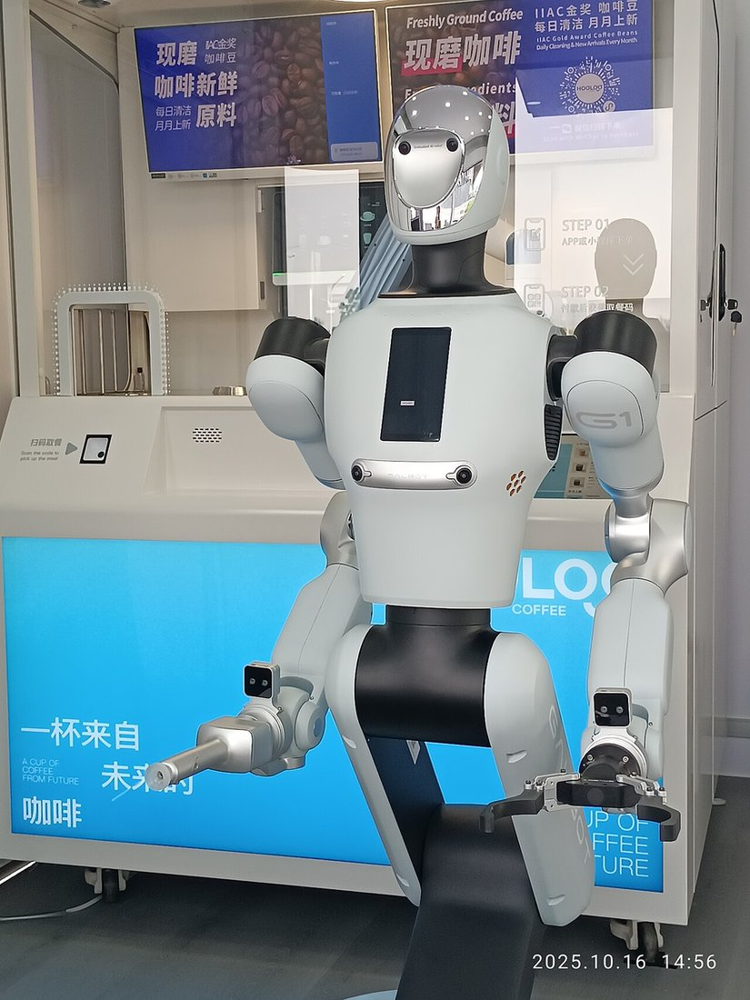
Galbot's wheeled dual-arm robot making drinks at a Galbot store in Shenzhen (Oct 2025). Photo: SABAIEE HuangChuis MMADEEG / Wikimedia Commons, CC0
Galbot (银河通用): China (Beijing), private. It is #3 by H1 2026 shipments: 900 (Smart Analytics Global) to 1,100+ (Counterpoint). It raised ¥2.5B ($362M) in Mar 2026 from the national AI fund, Sinopec, CITIC, Bank of China, and SAIC-linked investors. The last disclosed valuation was $3B (Dec 2025). Its wheeled dual-arm G1 runs in 170+ retail pharmacy sites in 40+ cities, and about 100 heavy-duty S1 units run in CATL battery plants [C/R]. A ¥236M robot sale to an investor that co-led its round is a related-party red flag. It has denied HK IPO reports, but banks were reportedly picked.
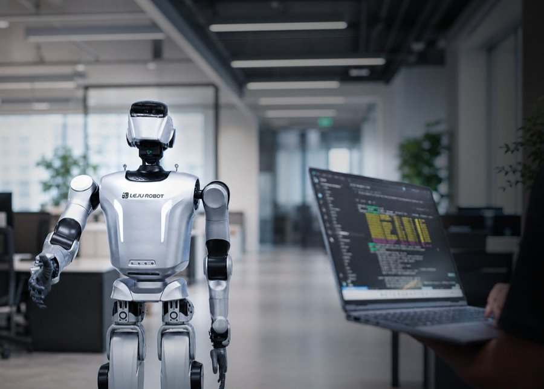
Leju Kuavo humanoid. Image: Leju Robotics
Leju Robotics (乐聚): China (Shenzhen), private, ChiNext IPO filed May 19, 2026 (Tencent-backed). It seeks ¥2.6B. It sold 577 Kuavo humanoids in 2025 for ¥178M revenue and shipped about 600–650 in H1 2026 [V: prospectus / trackers]. It is loss-making, with profit expected no earlier than 2028. Many units go to state "data training centers." The IPO is now subject to the regulatory slowdown.
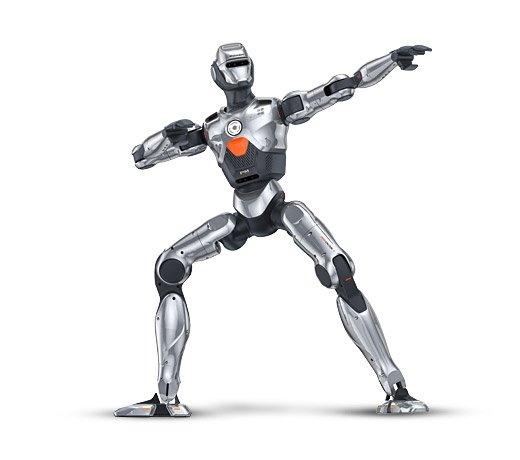
EngineAI humanoid. Image: EngineAI
EngineAI (众擎): China (Shenzhen), private, HK IPO filed confidentially (Jun 2026) [R: Bloomberg]. A $200M Series B with Luxshare (an Apple supplier) as investor valued it above $1.5B. Its T800 factory began "mass delivery" in May 2026 (10,000-unit scalable capacity) [C]. It targets 4,000–5,000 deliveries in 2026 and 30–50k capacity by 2027 [C, unverified]. Known for viral athletic demos (flips and kicks). Its industrial track record is thin.
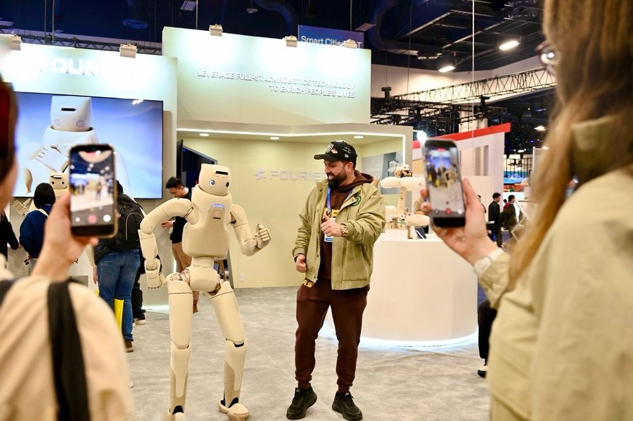
Fourier GR-3 at CES 2026. Photo: Fourier via PR Newswire
Fourier (傅利叶): China (Shanghai), private. It started in rehab exoskeletons and now makes GR-series humanoids. The GR-3 (CES Jan 2026) is a care-focused humanoid for eldercare and healthcare. It has raised about $246M; STAR IPO rumors are unconfirmed. Volumes are small (hundreds at most) [R]. Healthcare and eldercare is a differentiated niche.
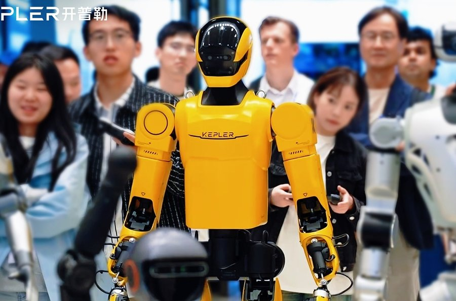
Kepler K2 "Bumblebee" at IROS 2025. Photo: Kepler Robotics via PR Newswire
Kepler (开普勒): China (Shanghai), private. Its K2 "Bumblebee" hybrid-architecture industrial humanoid is listed at ¥248,000 (~$34k), with a claimed 90-day lead time. "Mass production" was announced in Sep 2025, but by 2026 it is better described as small-batch [C]. Unit counts are undisclosed.
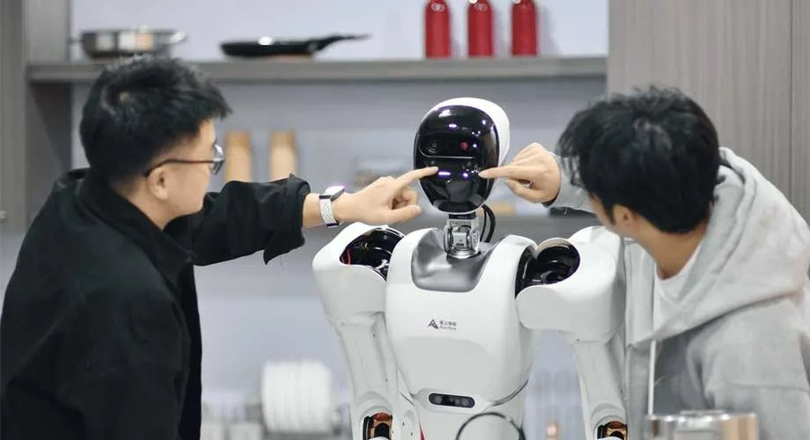
Astribot S1 with engineers. Image: Astribot
Astribot / Stardust Intelligence (星尘智能): China (Shenzhen), private. Its rope-driven, wheeled S1 is known for dexterous home-task demos. Series B (June 2026) brought in more than ¥1B across three rounds at a valuation above ¥10B (~$1.5B), with state and industrial investors including Thundersoft [R: 36Kr/PEdaily]. Volumes are undisclosed and small.
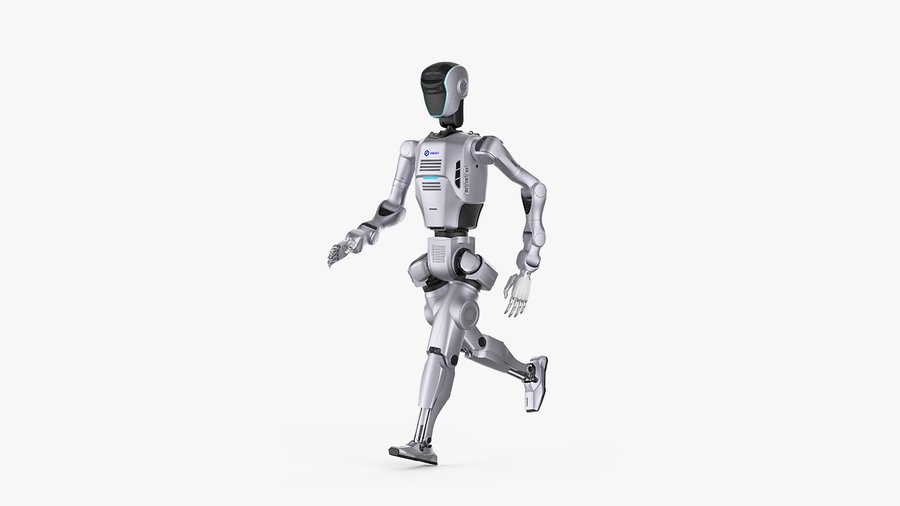
Dobot Atom. Image: Dobot
Dobot (越疆): China (Shenzhen). 2432.HK. A profitable-scale collaborative-arm maker adding humanoids (Atom, mass production and global delivery from early 2026). H1 2026 revenue was ¥316M (+107%), with embodied-AI revenue ¥45.2M (+2,052%). No humanoid unit count disclosed [V: HKEX interim]. A ChiNext A-share dual listing passed review on Jul 22, 2026 (pending CSRC). Accessible via HK-enabled brokers. Humanoids are a small part of the business.
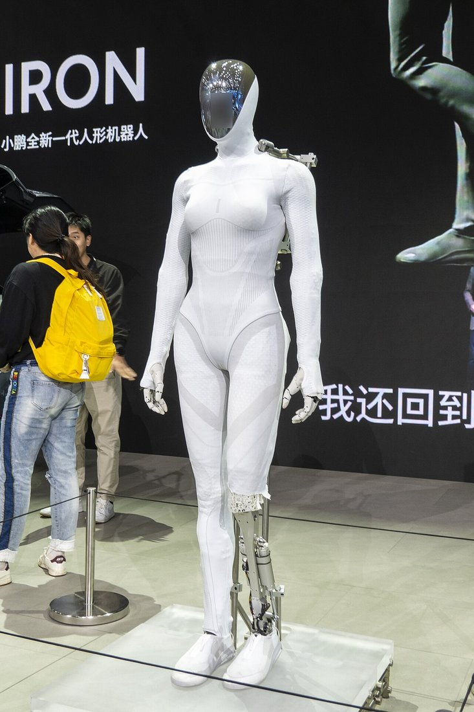
Xpeng IRON at Auto Guangzhou 2025. Photo: Tim Wu / Wikimedia Commons, CC BY-SA 4.0
Xpeng (IRON): China (Guangzhou). XPEV (NYSE) / 9868.HK. It commissioned an automated IRON production line in Sep 2026, with the first units walking off the line [V: company]. It targets volume production by end-2026, first deployed in its own stores and campuses, with official launch and outside deliveries in 2027 [C]. No capacity, price, or customers disclosed. Like Tesla, an EV maker with a robot option. Easy US access via XPEV.
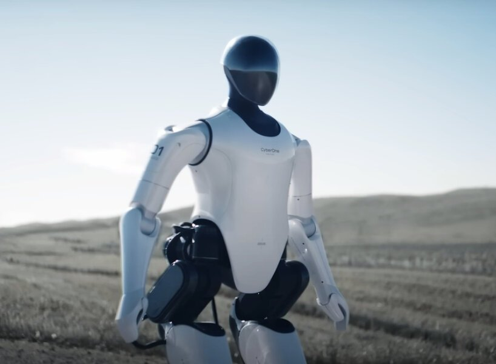
Xiaomi CyberOne (2022). Image: Xiaomi, via designboom
Xiaomi (CyberOne and new gen): China (Beijing). 1810.HK. Its humanoids are in EV-factory "intern" trials: nut-fastening success rose from about 90% to 98% over four months [C]. Large-scale factory deployment is targeted "within five years." Not commercial. Negligible to Xiaomi's value.
Other Chinese names: LimX Dynamics ($200M pre-IPO at ¥15B, preparing an HK IPO). Noetix (sub-$1,500 "Bumi" kids' humanoid, raised about ¥1B, CATL-linked). MagicLab (IPO prep; founder departed). Booster Robotics (soccer and education). Horizon Robotics (9660.HK), which supplies robot and auto AI chips and is in KOID.
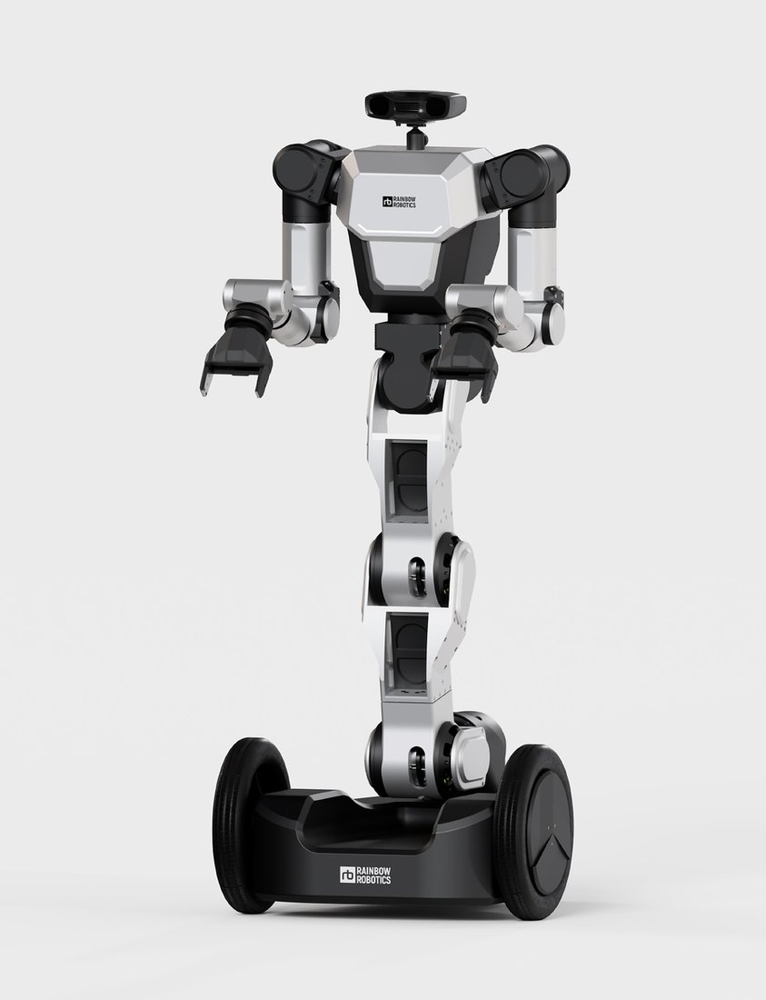
Rainbow Robotics RB-Y1. Image: Rainbow Robotics, via PR Newswire
Rainbow Robotics: South Korea. 277810 (KOSDAQ). Samsung Electronics owns 35%, and Rainbow is the core of Samsung's humanoid program. H1 2026 mobile-humanoid (RB-Y1, wheeled) revenue was KRW 8.65B (~$6M), 40.5% of sales, and Q2 revenue nearly doubled, though losses widened [V: Korean filings via press]. Samsung's purchases tripled YoY (about 27% of revenue). US RB-Y1 shipments were delayed by the FCC rule. In KOID (about 2.1%). Hard to buy directly from the US (Korean market access is limited); use the ETF.
Hyundai Motor Group: see Boston Dynamics above. Ticker 005380.KS. Hyundai Mobis (012330.KS) makes actuators and is TORK's #3 holding.
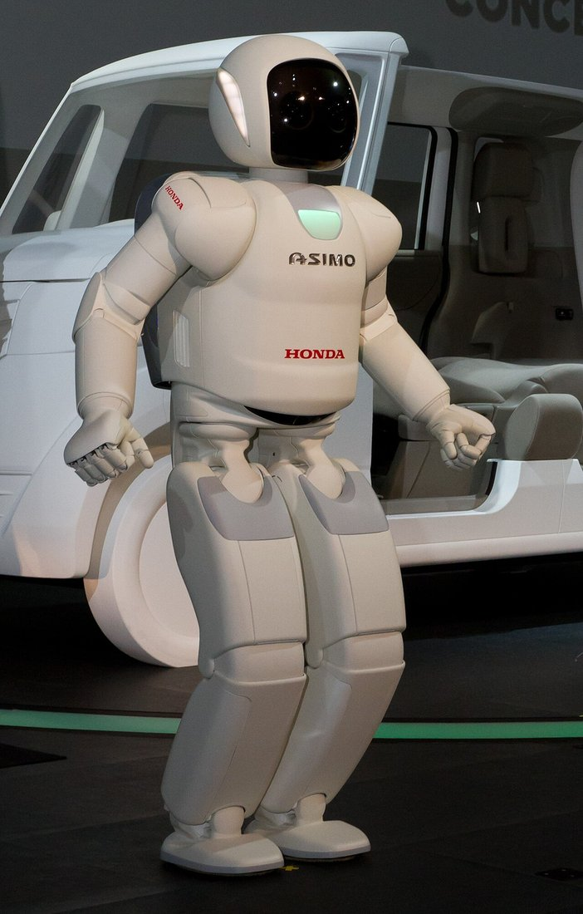
Honda ASIMO at the 2011 Tokyo Motor Show (retired in 2018). Photo: Morio / Wikimedia Commons, CC BY-SA 3.0
Honda: Japan. HMC (NYSE) / 7267.T. No commercial humanoid. ASIMO was retired in 2018. Honda's Aug 2026 "Avatar Robot" is a teleoperated robot with an advanced multi-fingered hand. Research stage.
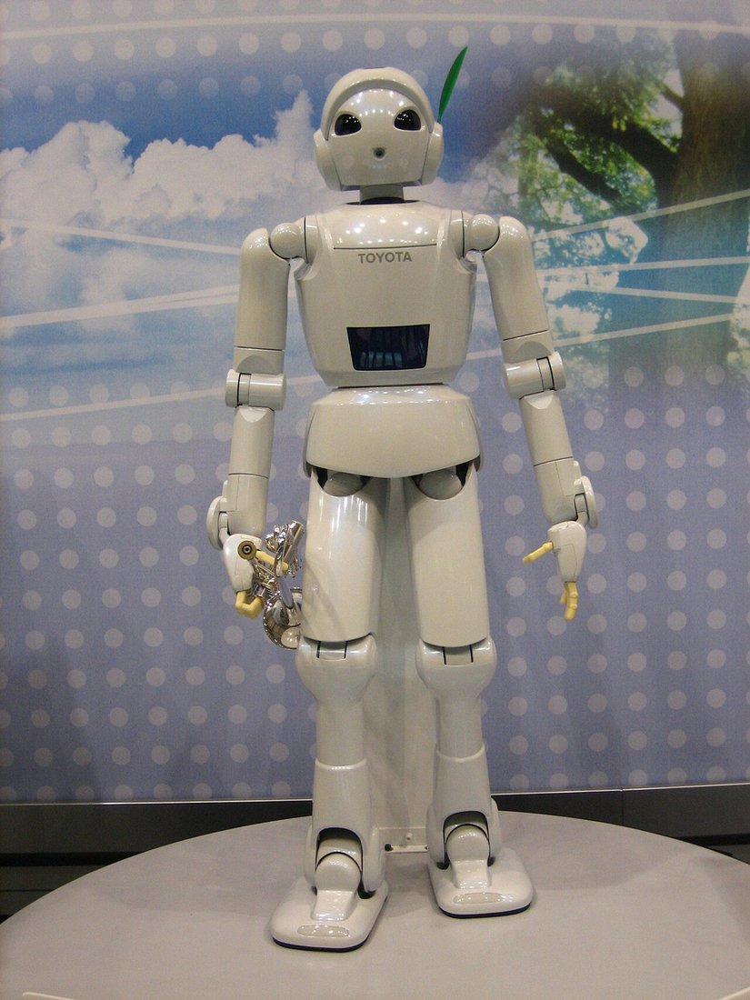
Toyota Partner Robot (2007), an earlier Toyota research humanoid; the T-HR3 is not pictured. Photo: Luis Villa del Campo / Wikimedia Commons, CC BY 2.0
Toyota: Japan. TM (NYSE) / 7203.T. The T-HR3 humanoid remains research. Toyota Research Institute works on large behavior models (including with Boston Dynamics). A wheeled "Eley" factory robot is planned from 2028 [R]. Toyota Canada is an Agility Digit customer.
Kawasaki Heavy Industries: Japan. 7012.T. Kaleido 9 is a robust research and disaster-response humanoid, with a full-autonomy target of 2030 (Nikkei). Not commercial.
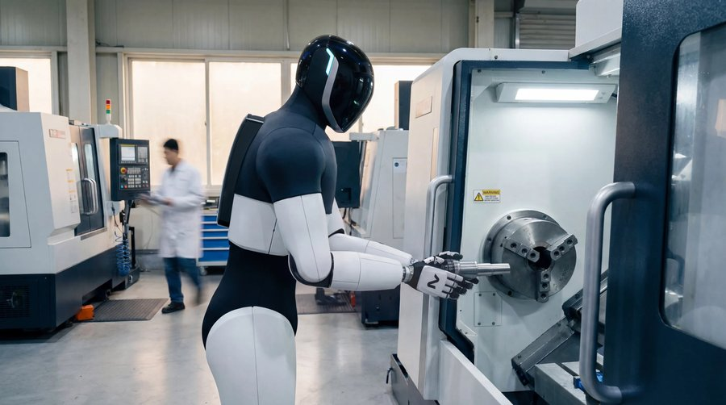
NEURA 4NE1. Image: NEURA Robotics
NEURA Robotics: Germany (Metzingen), private. Series C of up to $1.4B (Jun 2026) at about a $7B valuation, with NVIDIA, Amazon, Qualcomm, Tether, Bosch, Schaeffler, and the EIB. The full amount is milestone-contingent [V: company]. It sells cobots today; the 4NE1 humanoid is pilot or pre-commercial. Europe's best-funded player. An IPO has been talked about but is not filed.
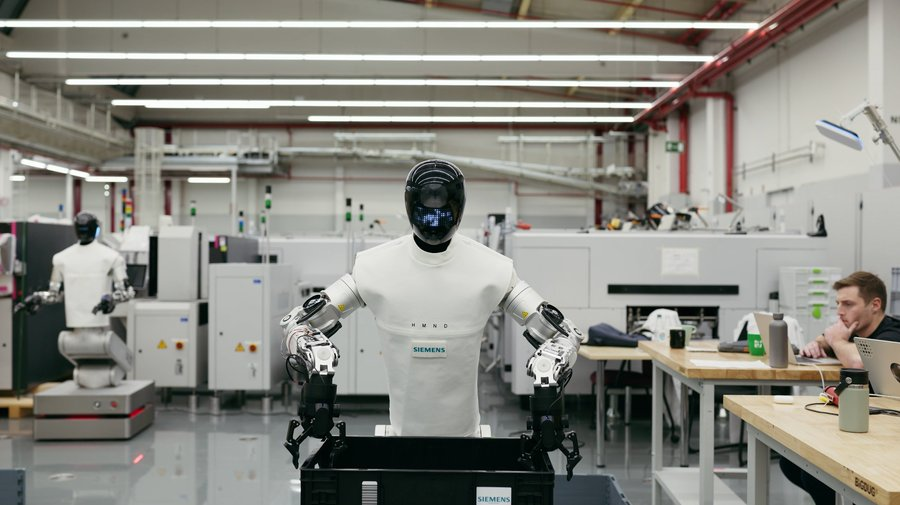
Humanoid's HMND 01 Alpha at Siemens' Erlangen factory. Photo: Siemens, via PR Newswire
Humanoid (SKL Robotics): UK (London), private. A $152M Series A at $1.35B (Jul 2026), with total funding of $270M. The wheeled HMND 01 Alpha passed a Siemens Erlangen pilot (60 tote moves/hour, 8+ hour uptime, >90% pick success) [C via Siemens]. Schaeffler deal: up to 2,000 robots by 2032, with deployments starting Dec 2026–Jun 2027 [V: Reuters May 13, 2026]. Fast-moving, but these are wheeled humanoids.
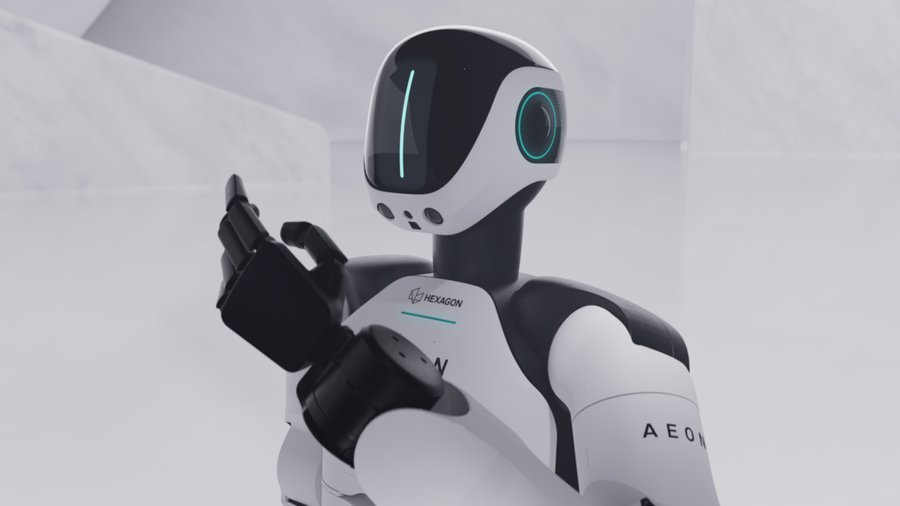
Hexagon AEON. Image: Hexagon
Hexagon Robotics (AEON): Sweden. HEXA-B (Stockholm). The AEON wheeled-and-legged industrial humanoid has a Schaeffler plan for at least 1,000 units by 2032 and Pilatus pilots, now training at Schaeffler's "Humanoid Gym" [V: Hexagon/Schaeffler releases]. A tiny part of Hexagon. In KOID.
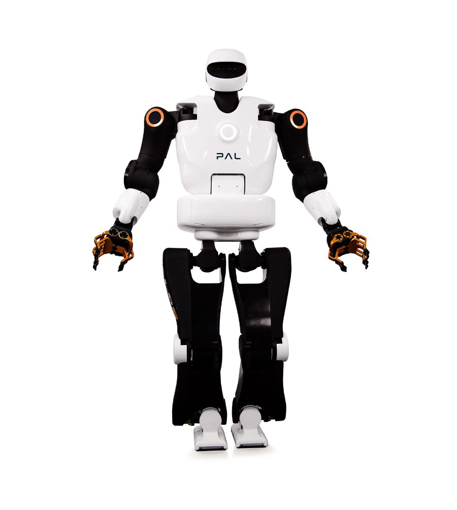
PAL Robotics TALOS. Image: PAL Robotics
PAL Robotics: Spain (Barcelona), private. A veteran maker of research humanoids: TALOS, and the new KANGAROO biped (2026 datasheet). Sales are mostly to labs and EU projects, in small volumes. Credible engineering, but not a mass-market contender.
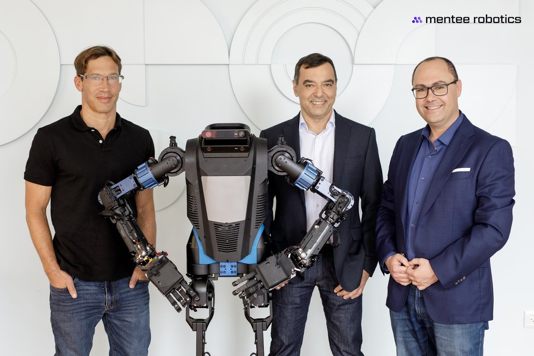
MenteeBot prototype with Mentee's founders (2024). Photo: Mentee Robotics
Mentee Robotics: Israel. Acquired by Mobileye (MBLY) on Feb 3, 2026 for $900M ($611.9M cash plus 26.3M MBLY shares) [V: SEC 8-K]. The co-founder is Amnon Shashua. MenteeBot customer proof-of-concepts run in 2026, with commercialization targeted for 2028 [C]. Exposure via MBLY (a small slice of value).
Clone Robotics: Poland/USA, private. Its musculoskeletal "Protoclone" uses artificial water-driven muscles and is a suspended research prototype. It announced 279 "Clone Alpha" units with no price or checkout. Funding is small (about $6.5M seed confirmed). Viral videos, but very early.
| # | Company | Country | Ticker / private | Maturity | Units sold/deployed (date, quality) | How a US retail investor gets exposure |
|---|---|---|---|---|---|---|
| 1 | Tesla Optimus | US | TSLA | Early production (internal) | Hundreds/wk built since Aug 2026; external sales late 2027 [R] | TSLA |
| 2 | Figure AI | US | Private ($39B) | Pilot / early production | 350+ Figure 03 built by Apr 2026 [C]; BMW and Catalyst projects | None (tiny via NVDA/MSFT) |
| 3 | Agility (Digit) | US | CCXI → AGLT (SPAC pending) | Commercial (RaaS) | 9 facilities, 65k+ hours [C]; 1,000-unit contract (milestone-based) | CCXI now; AGLT after close |
| 4 | Apptronik | US | Private (~$5–5.5B) | Pilot | Undisclosed | Tiny via GOOGL, JBL |
| 5 | Boston Dynamics | US/Korea | Private (Hyundai) | Early production | 2026 units all to Hyundai and DeepMind; count undisclosed | 005380.KS (small slice) |
| 6 | 1X (NEO) | Norway/US | Private (~$6B talks) | Pre-delivery consumer | 10k+ preorders [C]; 0 confirmed deliveries (Sep 2026) | None |
| 7 | Sanctuary AI | Canada | Private | Pivoted to software | Negligible | None |
| 8 | Persona AI | US | Private | Prototype | 0 | None |
| 9 | Foundation | US | Private | Prototype / test | Unverified | None |
| 10 | K-Scale | US | Defunct | n/a | n/a | n/a |
| 11 | Physical Intelligence | US | Private (~$11B) | Software / R&D | n/a | None |
| 12 | Skild AI | US | Private ($14B+) | Software / early commercial | n/a | None |
| 13 | NVIDIA | US | NVDA | Commercial platform | Used by most non-Chinese makers | NVDA |
| 14 | Unitree | China | 688836.SH | Commercial, profitable | 5,215 sold 2025 [V]; ~5–7k H1'26 [V] | KOID, HUMN (STAR not directly accessible) |
| 15 | AgiBot | China | Private (HK IPO prep) | Commercial | ~8.4–9.7k H1'26 [V]; 20k cumulative [C] | None yet (Swancor 688585 is not AgiBot) |
| 16 | UBTech | China | 9880.HK | Commercial (customized) | 1,079 in 2025; 921 H1'26 [V] | 9880.HK via IBKR/Fidelity/Schwab; KOID |
| 17 | Galbot | China | Private ($3B+) | Commercial (wheeled) | ~900–1,100 H1'26 [V] | None |
| 18 | Leju | China | Private (ChiNext filed) | Commercial | 577 in 2025 [V]; ~650 H1'26 | None yet |
| 19 | EngineAI | China | Private (HK filing) | Early commercial | 4–5k 2026 target [C] | None yet |
| 20 | Fourier | China | Private | Early commercial (care) | Small, undisclosed | None |
| 21 | Kepler | China | Private | Small batch | Undisclosed; ¥248k list | None |
| 22 | Astribot | China | Private (>¥10B) | Small batch | Undisclosed | None |
| 23 | Dobot | China | 2432.HK | Early commercial | Undisclosed; ¥45M embodied revenue H1'26 | 2432.HK |
| 24 | Xpeng IRON | China | XPEV / 9868.HK | Line commissioned | 0 external; launch 2027 | XPEV |
| 25 | Xiaomi | China | 1810.HK | Factory trials | 0 commercial | 1810.HK |
| 26 | Rainbow Robotics | Korea | 277810.KQ | Early commercial | KRW 8.65B humanoid revenue H1'26 | KOID |
| 27–29 | Honda / Toyota / Kawasaki | Japan | HMC / TM / 7012.T | Research | 0 commercial | Not a humanoid play |
| 30 | NEURA | Germany | Private (~$7B) | Pilot (4NE1) | Undisclosed | None |
| 31 | Humanoid (UK) | UK | Private ($1.35B) | Pilot → first deployment | Siemens pilot; Schaeffler from Dec 2026 | None |
| 32 | Hexagon AEON | Sweden | HEXA-B.ST | Pilot | Schaeffler 1,000 by 2032 plan | HEXA-B; KOID |
| 33 | PAL Robotics | Spain | Private | Commercial (research niche) | Small lab volumes | None |
| 34 | Mentee | Israel | Mobileye (MBLY) | Pilot / POC | 0 commercial | MBLY |
| 35 | Clone | Poland/US | Private | Prototype | 0 | None |
A. ETFs, the simplest diversified route: - KOID: KraneShares Global Humanoid & Physical AI. 0.69% fee, about $363M AUM, 59 roughly equal-weight holdings (Oct 5, 2026). It holds Unitree (1.8%), UBTech (1.9%), Rainbow, Tesla, NVIDIA, Harmonic Drive, Nabtesco, THK, Hiwin, Leaderdrive, Sanhua, Tuopu, Schaeffler, Hexagon, Jabil, and others. About +13–16% YTD per sources. Best one-ticket option, and the only easy way to own Unitree and Chinese A-share suppliers. - HUMN: Roundhill Humanoid Robotics. 0.75%, actively managed. More concentrated in humanoid makers (reported top holdings: Tesla, Harmonic Drive, Unitree, UBTech, Rainbow; holdings couldn't be verified live). Roughly flat YTD. - TORK: KraneShares Actuator ETF. New (launched Sep 24, 2026), 19 holdings: Leaderdrive about 13%, Harmonic Drive about 10%, Hyundai Mobis, Sanhua, HL Mando, Hiwin, THK, Renishaw. About 65% overlap with KOID. It's a concentrated "joints" bet. - BOTZ (Global X) / ROBO (ROBO Global): broad industrial robotics and automation. Lower humanoid purity, more mature companies.
B. Direct US-listed stocks: - TSLA: the largest humanoid program by volume ambition. Catalyst: Oct 21 earnings. Risk: Optimus timelines have repeatedly slipped, and the valuation rests on autos, energy, and robotaxi too. - NVDA: picks-and-shovels for nearly every Western humanoid (GR00T, Thor, simulation). Low humanoid sensitivity, high quality. - CCXI → AGLT (Agility): the only US pure-play humanoid route coming. A SPAC with heavy dilution and redemption risk, revenue undisclosed. Wait for the S-4 financials and consider buying after the merger rather than chasing the SPAC. - XPEV, MBLY, GOOGL, JBL: small humanoid "options" inside larger businesses.
C. Hong Kong listings (need a broker with HK access: Interactive Brokers, Fidelity international trading, Schwab Global Account): - UBTech (9880.HK): the most "real" listed humanoid revenue outside Unitree, but loss-making, dilutive, and shut out of the US market. - Dobot (2432.HK): profitable-scale cobot base plus a humanoid option. - Sanhua (2050.HK), Horizon Robotics (9660.HK), Xiaomi (1810.HK): supply chain or platform. - Watch for HK IPOs: AgiBot, EngineAI, LimX, Galbot. IPO pops have been extreme and then faded (Unitree fell about 60% from its open).
D. Picks-and-shovels suppliers (many are Japanese, Taiwanese, or A-shares; easiest via KOID or TORK): - Reducers and actuators: Harmonic Drive Systems (6324.T), Nabtesco (6268.T), Leaderdrive (688017.SH), THK (6481.T), Hiwin (2049.TW), Schaeffler (SHA0.DE), which is both supplier and buyer, Hyundai Mobis (012330.KS). - Tesla Optimus actuator candidates: Sanhua (002050.SZ / 2050.HK) and Tuopu (601689.SH). Tuopu's H1 2026 robot-actuator revenue was only ¥14M, and Sanhua's rumored $685M Tesla order was denied. The supply-chain hype exceeds current revenue. - Chips, sensors, and motion: NVDA, TXN, ADI, Renesas, Infineon, STM, Keyence, Cognex, Sensata, TE. Rare-earth magnets: MP Materials, Lynas.
Risks to weigh: 1. Valuation and bubble risk. Unitree is at about 80x sales, private rounds are far ahead of revenue, and 1X's valuation was cut. 2. The demand is partly artificial. In China, about 69% goes to research, display, and government data centers, and some companies have related-party sales. 3. Demo vs reality. Teleoperation, edited videos, and robots at about 50% of human productivity. 4. Policy. The FCC rule blocks new foreign robots, China slowed IPOs, and US–China tensions add tariff and delisting risk for HK/China names. 5. Timelines. Hyundai at scale in 2028–30, Tesla sales late 2027, 1X slipping. 6. Dilution and SPAC mechanics. 7. Most startups will fail, as K-Scale did.
Suggested posture: Keep humanoids a small "venture" sleeve. Build a core with KOID (or KOID plus TORK) and NVDA, add TSLA only if you already like the rest of Tesla, and keep UBTech or Agility (after the merger) as small satellite bets. Add on evidence (signals in section 1), not on demos.
Caveats: Many unit counts are company claims, and the three shipment trackers use different definitions. Paywalled sources (The Information, Bloomberg, Reuters) were read via secondary coverage. Unitree's market cap and P/S, the Agility per-robot math, and FX conversions (about ¥6.7/$) are my own calculations. Prices move daily; check before trading.